Arm-based FMRI Software Development - Pathological Grade Prediction from Medical Imaging Based on Inception-Resnet-v2
Classification
Intro
In this project, I build a classification model to predict pathological grade from medical imaging based on Inception-Resnet-v3.
The raw data is data about glioma extracted from TCIA.
Before training, the raw data is processed into data slices and the corresponding pathological grades. The general steps are shown below.
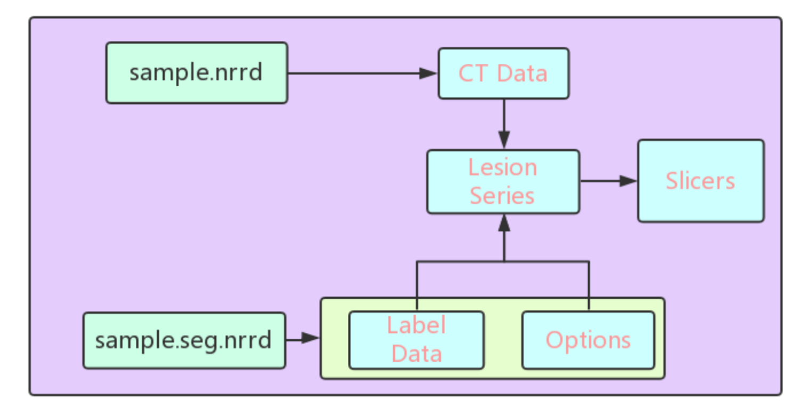
Nowadays, the main trend for training CNN on small dataset is transfer learning. The mechanism behind is to train the model based on large datasets while tune the parameters of the trained models using small datasets. In this way, the model could be both adaptive to small datasets with high accuracy. Inception Resnet v2 is a newly introduced well performed framework for transfer learning.
Inception-Resnet-v3 is a CNN released by Google. It is part of the evolution of GoogLeNet, which is a remarkable achievemnet in the exploration of residual learning in inception networks.
Based on Inception-Restnet-v2, I use the outputs of the bottleneck layer as the extracted features and then classify these features through a dense layer.
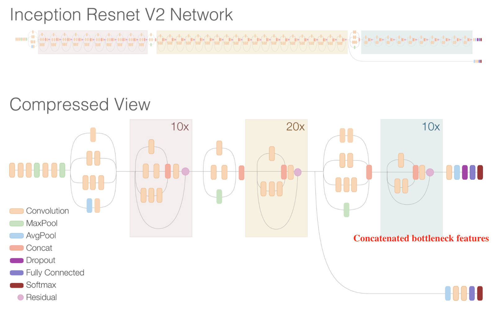
The features from two stages are concatenated together and instead of five dense layers, I keep only two layers which means the last three layers are discarded. Then I put these features into a fully connected layer for classification, where each feature is connected to each output. The input of the model is sliced images of different pathological grades and the output is the prediction of pathological grade for the slice.
In this project, I recieved great help from paper.
Results
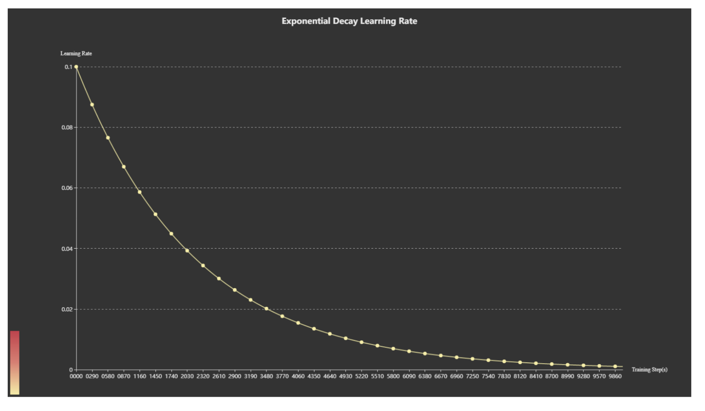
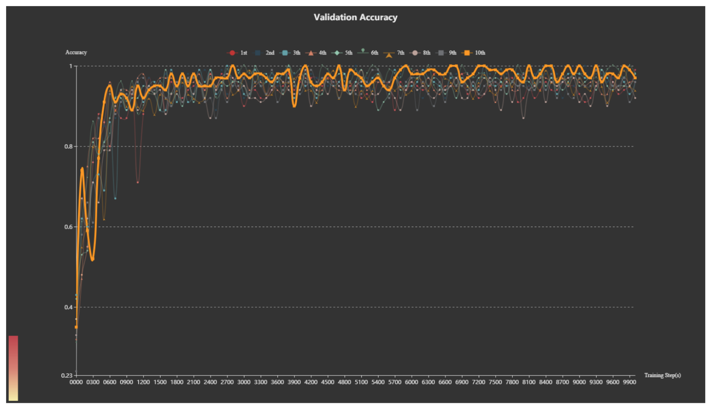
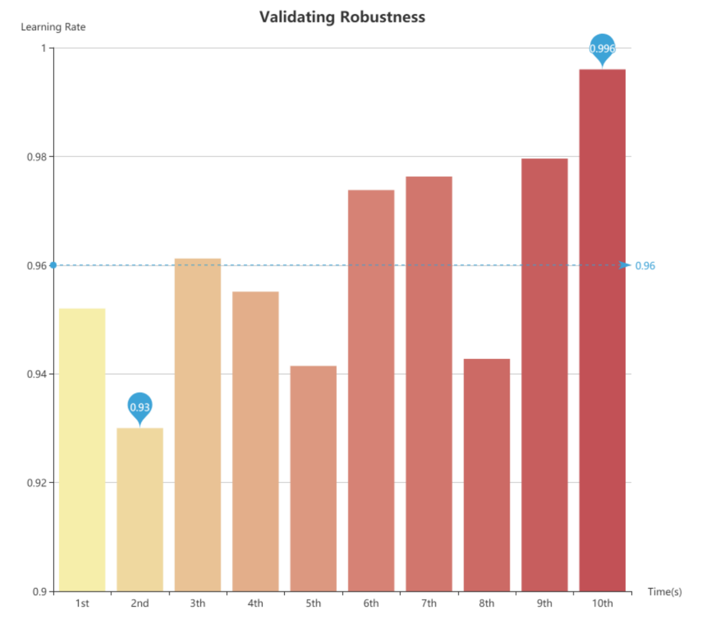
Segmentation
Resnet could be regarded as the part to extract features. In order to implement segmentation, I used a prevailing idea of structure in medical imaging segmentation-Unet.
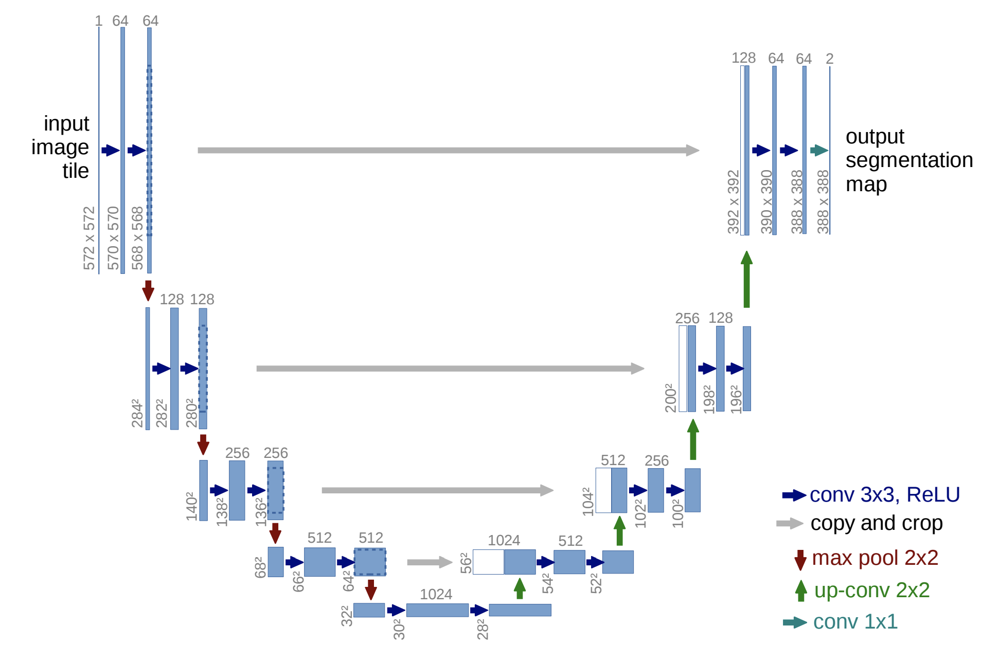
Deployment of Model on Terminal Device
In order to build a platform for FMRI software based on the Arm CPU architecture, Armv8.2 LITTLE core Cortex-A55 has been used as the target platform. Since there was no single chip on the market for the Cortex-A55 to develop software applications, I need a virtual platform (Virtual Platform) to develop the trained model and analyze system performance. The Arm Fast Model is the perfect solution I need.
I firstly translate my model in C++ for future developing on embedded device.
I need an efficient development environment that allows me to quickly develop a neural network algorithm from scratch. In addition, I also need an image-based analysis tool that allows me to fully grasp the overall system performance trend, where Arm DS5 and Streamline provide a complete toolchain to meet my development needs.
I firstly add a cortex-A55 Fixed Virtual Platforms (FVP) debug connection under bare-metal mode.
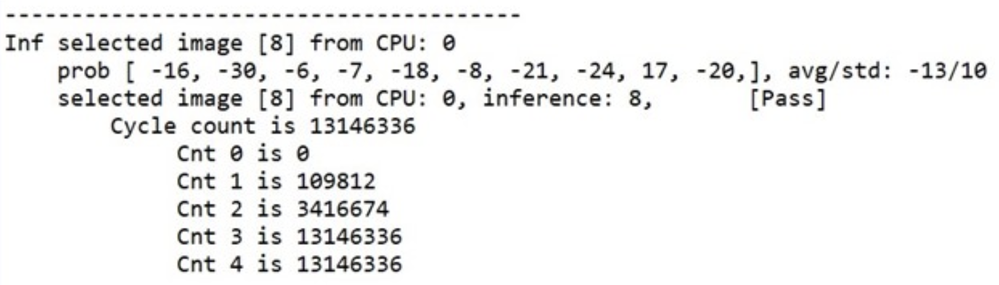
The results from PMU(Performance Mornitor Unit) showed that the first version of the neural networks took up to 18 million instructions to compute on a single picture.
In order to explore the behavior of actual CPU usage, I used Streamline.
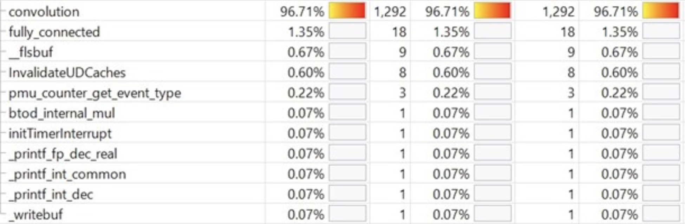
The cpu load is around 96% which is too high so I decided to optize through compiler by adjusting options for arm compiler 6.
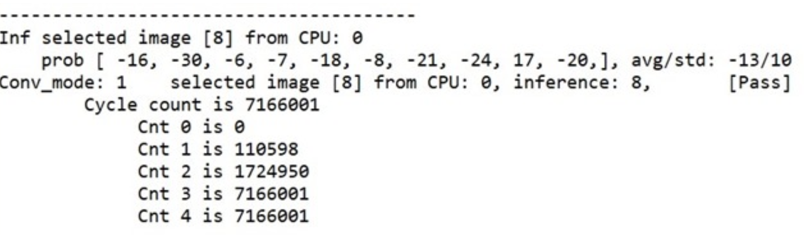
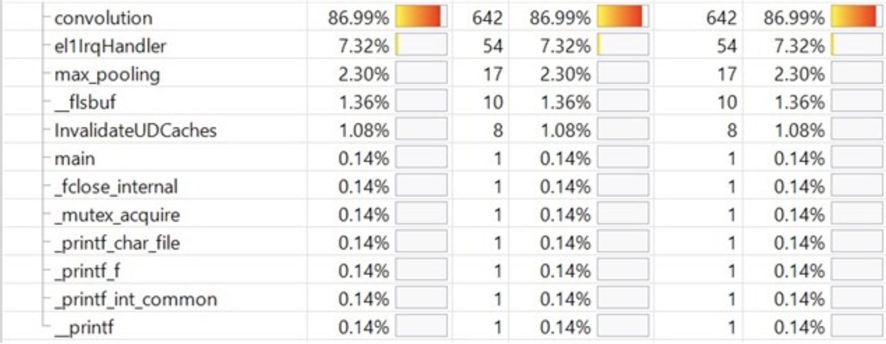
Also I decomposed the convolution operation based on MEC algorithm. The idea is as shown below. However, the cpu load is still high(86%).
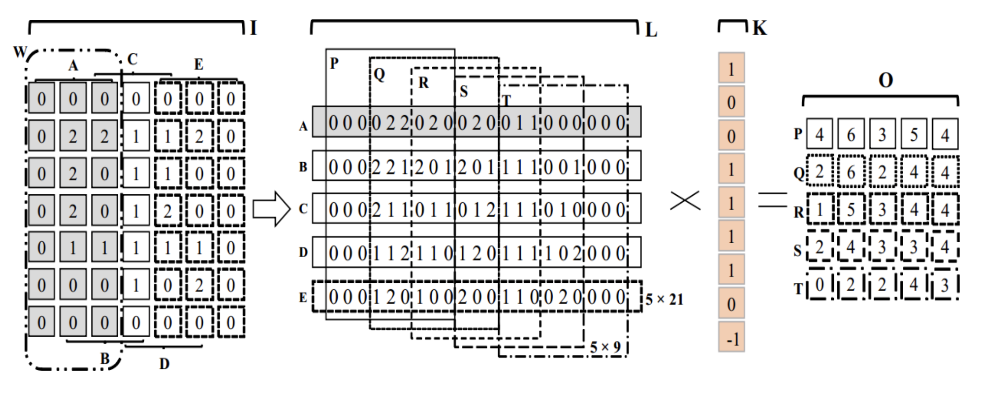
In addition to providing instruction execution information, Streamline also provides the average number of CPU accesses per sample time. This information can help me to roughly evaluate the memory usage of the neural networks each inference phase.
The time of cpu accesses reminds me to redesign the API in order to optimize the code structures by reducing redundant for loops.
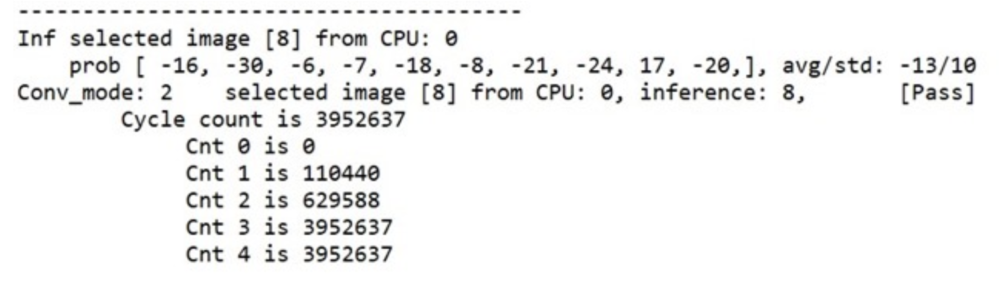
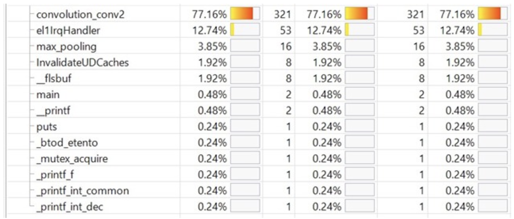
SystemC/TLM provides a predictive behavioral model based on times series and can be integrated into the Arm fast model.